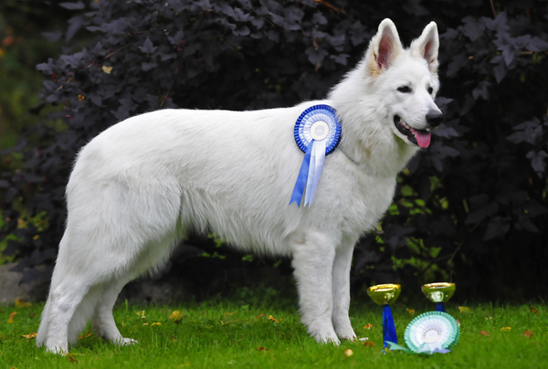

ELSAN NÄYTTELYTULOKSET

24.03.2013 RAUTALAMPI RY / junioriluokka Elena Ruskovaara JUN-EH
Oikea tyyppi, vielä pentumainen. Vahva luusto, tarpeeksi kulmauksia edessä, kohtuulliset takana. Tilava rintakehä. Puhdas valkoinen väri. Vahva kaula, jossa tarpeeksi pituutta. Tumma pigmentti, erinomaiset silmät ja ilme, pää vielä pentumainen. Vähän kapeat takaliikkeet, häntä saisi olla tyylikkäämpi liikkeessä. Lupaava askelpituus mutta liike vielä pentumainen. Tyyppi on oikea, tarvitsee vielä aikaa.
13.04.2013 VAASA KV / junioriluokka Leos Jancik, Tsekki JUN-ERI, JUK2, SA
Oikeanlainen feminiini pää, tumma pigmentti, oikea purenta ja kaikki hampaat. Hyvät korvat ja tummat silmät. Oikea ylälinja, hyvä kaula. Oikeanlainen rinta. Hyvät liikkeet, hiukan ahdas takaa. Oikeanlainen karvapeite.
19.05.2013 JÄMSÄ KR / junioriluokka Tuula Savolainen JUN-ERI, JUK4
1 vuoden ikäinen nuori narttu. Tyyppi erinomainen. Hyvä kaula ja ylälinja. Voisi mittasuhteiltaan olla hieman pidempi. Hyvä pää ja ilme, hyvät korvat. Hyvä rungon tilavuus. Hieman luisu lantio. Hyvin kulmautunut edestä ja takaa. Takaliikkeet kinnerahtaat, etuliikkeissä löysyyttä. Liikkuu sivulta hyvin. Hyvä turkki ja häntä.
04.08.2013 IISALMI KV / junioriluokka George Schogol, Georgia JUN-ERI, JUK1, SA, PN3
1 year 2 months, feminine bitch of good size, strong bones, nice head, very good pigmentation, dark eyes. Lovely neck and front. Could have better coat.
17.08.2013 KOUVOLA KR / junioriluokka Nenad Davidovic, Serbia JUN-ERI, JUK1, SA, PN4
Teeth complete. In excellent condition. Typical head with excellent pigment. Excellent in front. Very correct neck. Strong back. Good angulation. Very typical coat. Well moving.
31.08.2013 TAMPERE RN / junioriluokka Monika Blaha, Itävalta JUN-ERI, JUK1, SA, PN1, SERTI, VSP
Excellent type and size. Well balanced all together. Head with good expression. Strong neck, good croup. Well angulated, strong bones. Very nice coat. Excellent movement.
21.09.2013 HEINOLA SSKY:N ERIKOISNÄYTTELY / junioriluokka Joanna Adamowska, Puola JUN-ERI, JUK2, SA
Proportional female medium size, head with good expression. Dark eyes and nostril. Very good length of neck, excellent body. Good movement.
19.10.2013 SEINÄJOKI KV / junioriluokka Gerard Jipping, Hollanti JUN-ERI, JUK1
Young female, nice type. Correct proportions in hight and length. Nice topline. Strong but feminine head, nice eye and expression. Correct pigmentation and bite. Parallel front. Excellent angulation in front. Hind quarter a little stiff in hock, also in movement. Nice movement but must develop.
17.11.2013 JYVÄSKYLÄ KV / nuortenluokka Renau Carlos Femandez, Espanja NUO-EH, NUK3
Nice bitch, feminine. Head is quite ok, but topline, rear action and tail carriage could be better. Otherwise it's ok dog.
13.12.2013 HELSINKI WINNER 2013 / nuortenluokka Karl-Erik Johansson, Ruotsi NUO-ERI, NUK2, SA
Utmärkt typ. Vackert feminint huvud, mörka ögon, bra uttryck, bra bett. Bra hals och rygg. Utmärkt bröstkorg, utmärkta vinklar. Vägvinnande rörelser. Bra färg och pigment, vacker päls.
14.12.2013 NORDIC WINNER 2013 / nuortenluokka Maija Sylgrén NUO-ERI, NUK2
1v 7kk vanha. Hyvät rungon mittasuhteet. Vahva nartun pää, hieman syvä kallo. Kauniit tummat silmät, upea pigmentti. Hyvä purenta, hyvät korvat. Kaunis kaula ja ylälinja. Oikea rintakehän malli. Tasapainoiset kulmaukset. Hieman taipuneet ranteet. Korkea kinner, kovin ahdas takaliike. Hyväksyttävä hännän asento liikkeessä. Sopiva askelpituus. Hyvä karvanlaatu ja väri.
15.12.2013 VOITTAJA 2013 / nuortenluokka Morten Matthes, Tanska NUO-ERI, NUK3
Well shaped head with nice expression. Good eyes, skull and ears. Medium length of neck. Strong back. Well developed chest. Rectangular body shape. Good angulations both fore and hind. Nice coat. A little long hocks. Moves good tireless.
22.02.2014 JYVÄSKYLÄ KV / nuortenluokka Paula Heikkinen-Lehkonen NUO-ERI, NUK3
Tasapainoinen pitkäkarvainen narttu. Suoralinjainen pää. Täyteläinen kuono. Tummat silmät ja hyvä pigmentti. Vankka luusto, hyvät raajojen kulmaukset. Hyvä rintakehän tilavuus ja syvyys. Aavistuksen kaareva selkälinja. Etuliikkeet vakaat ja yhdensuuntaiset, takaa kintereet painuvat hiukan pihtiin. Paksu ja melko tiheä karva, puhdas väri. Varma ja rauhallinen käytös.
18.05.2014 RIIHIMÄKI RN / nuortenluokka Anca Giura, Romania NUO-ERI, NUK1, SA, PN3
Female with good proportions, good proportions of head, feminine expression, having right neck putting to value head. Good ribcage, good movement.
01.05.2014 KEURUU RN / avoin luokka Nina Janger AVO-ERI, AVK2
2-vuotias, vahva, mittasuhteiltaan riittävän pitkä narttu. Vahva pää. Ilme voisi olla hieman feminiinisempi. Hyvä purenta. Hyvä pigmentti. Kookkaat leveäasentoiset korvat. Hyvä ylälinja. Vahva luusto ja runko. Voisi liikkua joustavamalla askeleella. Aavistuksen lyhyt olkavarsi. Kaunis häntä. Hyvä väri ja karvanlaatu. Miellyttävä käyttäytyminen.
15.06.2014 NURMES RN / avoin luokka Hilkka Salohalla AVO-EH
Kooltaan ja mittasuhteiltaan oikea. Hyvät pään linjat ja pigmentti, purenta ja korvat, pyöreät silmät. Hyvä kaula ja ylälinja. Riittävä eturinta. Rintakehä voisi olla hieman pidempi. Hyvä luusto ja käpälät. Oikein kulmautunut. Hyvä karvapeite. Hieman ruskehtavaa korvissa ja selässä. Liikkuu ahtaasti takaa ja varvasahtaasti edestä. Ylälinja liikkeessä nousee takakorkeaksi.
19.07.2014 ASKERSUND INT, RUOTSI / open class Rodi Hübenthal, Norja AVO-EH, AVK2
God typ. Ganska välbygda men ? för grov, lite för maskulint huvud. Bra hals, ganska bra överlinje, tillräcklig kroppslängd. Lite grov benstomme. Normalt vinklad. Rör sig aldeles för husträngt och med för kort steglengd bak.
20.07.2014 KÖPING INT, RUOTSI / open class Pirjo Aaltonen AVO-ERI, AVK1, SA, PN2, CAC, VA-CACIB
Very nice feminin bitch. Very nice proportions and outlines. Nice head. A bit light eyes. Very good pigmentation. Well set ears. Well angulated. Goog body. Typical topline. Moves well from side, a bit narrow in rear.
26.07.2014 SAARIJÄRVI KR / avoin luokka Pirjo Aaltonen AVO-ERI, AVK1, SA, PN4
Hyväluustoinen narttu. Hyvät mittasuhteet. Vahva nartun pää. Hyvä pigmentti huulissa, kirsussa ja silmien ympärillä. Hyvin kulmautuneet raajat. Liikkeessä häntä nousee turhan korkealle. Sivuliikkeessä voisi olla enemmän tehoa. Kapeat takaliikkeet.
02.08.2014 SAWO SHOW, KUOPIO KV / avoin luokka Marianne Baden, Tanska AVO-ERI, AVK1, SA, PN1, VSP, SERT, CACIB
Feminine bitch with lovely proportions. Lovely head and expression. Well set and carried ears. Lovely dark eyes. Correct bite. Excellent neck and topline. Well set tail. Excellent bone and body. Lovely pause. Moves easily but a bit close rear. Tiptop coat condition. Very well presented.
03.08.2014 SAWO SHOW, KUOPIO KV / avoin luokka Petru Muntean, Romania AVO-ERI, AVK1, SA, PN3, VA-CACIB
26 months female in type. Very nice head with good proportions and expression. Correct bite. Good body structure with correct angulations. Coat and pigmentation of good quality. Could have better drive in hind.
10.08.2014 MAAILMANVOITTAJA 2014, HELSINKI / avoin luokka Elina Haapaniemi AVO-ERI
Hieman yli 2 vuotias kaunis narttu, hyvin feminiininen erinomainen pää, riittävän tummat silmät, hyvä pigmentti. Kaunis luusto, kohtuullinen rungon pituus, tasapainoiset kulmaukset, hyvä puhdas väri. Hieman ahtaat takaliikkeet, sivusta hyvät. Saisi kantaa häntänsä paremmin mutta hyvä kokonaiskuva.
06.09.2014 ÄÄNEKOSKI RN / avoin luokka Antti Nieminen AVO-ERI, AVK1, SA, PN1, SERT, VSP, FI ja SE MVA
2 vuotta 3 kuukautta, keskikokoinen, oikeatyyppinen. Hyvä selkä, hieman luisu lantio. Riittävästi kulmautunut. Liikkuu hyvin, hieman löysät ranteet edestä. Rodunomainen pää. Hyvä pigmentti ja turkki. Avoin ja luoksepäästävä.
20.09.2014 TAMPERE RN / valioluokka Gert Christiansen, Tanska VAL-ERI, VAK1, SA, PN1, VSP
2,5 years, feminin head and expression, scissor bite, brown eyes, well set ears, good neck and topline. Well set tail, short body, well angulated, good bones. Moves well. Not in coat condition, nice temperament.
06.12.2014 HELSINKI WINNER, HELSINKI / valioluokka Antti Nieminen VAL-EH
2,5 vuotias, hyvänkokoinen, hieman takakorkea, kinnerahdas takaa. Hyvä rintakehä ja kaula, löysät ranteet. Hieman silkkimäinen valkoinen turkki jossa aavistus ruskeaa. Rodunomainen pää ja ilme. Avoin ja luoksepäästävä.
07.12.2014 VOITTAJA 2014, HELSINKI / valioluokka Ruth Wagner, Luxemburg VAL-ERI
2,5 years old. Correct head with full pigmentation. Good topline. Little bit round over loin. Correct angulations in front, enough behind. Movement in front correct, behind too close.
05.12.2015 HELSINKI WINNER 2015, HELSINKI / valioluokka Boris Spoljaric, Kroatia VAL-ERI
3 years, good bite, pretty head, dark eyes, strong neck, very good angulation, good drive.
06.12.2015 VOITTAJA 2015, HELSINKI / valioluokka Francisco Salvador Janeiro, Portugali VAL-ERI
Excellent type. Good proportions in the head. Excellent neck. I would like better topline. Very good angulations behind and front. Movement is very close behind and a little open in front.